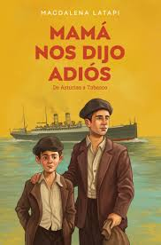

El Bosque Mágico
Naira Gamboa
La esencia del libro reside en la creación de un mundo en el que la imaginación es el principal motor.La trama gira en torno a las experiencias de los personajes dentro de este bosque encantado, donde se encontrarán con situaciones extraordinarias y vivirán momentos de suspenso, aventura y quizás alguna enseñanza oculta.
La obra, siendo una primera edición, busca capturar la atención del lector a través de una propuesta de fantasía pura, invitando a explorar las posibilidades ilimitadas que ofrece un "bosque mágico".

Romeo y Julieta
William Shakespeare
La historia se centra en el amor prohibido entre dos jóvenes que pertenecen a familias enemigas juradas: los Montesco y los CapuletoRomeo Montesco, un joven melancólico que suspira por un amor no correspondido (Rosalina), es convencido por sus amigos para asistir a un baile de máscaras en la casa de los Capuleto. Allí, Romeo ve a Julieta Capuleto y ambos se enamoran instantáneamente, sin saber la identidad del otro. Cuando descubren que pertenecen a familias rivales, la noticia les causa una gran angustia, pero su amor ya es inquebrantable.

Mamá Nos Dijo Adiós
Magdalena Latapi
Es una conmovedora novela que explora el complejo proceso del duelo y la despedida a través de los ojos de una familia que enfrenta la pérdida de su madre. La autora nos sumerge en un relato íntimo y emotivo, donde el dolor de la ausencia se entrelaza con la necesidad de sanar y seguir adelante.
La historia se centra en el impacto de la muerte de la madre en la dinámica familiar. Latapi describe con sensibilidad las diferentes reacciones de los hijos y el padre ante la pérdida, mostrando cómo cada miembro atraviesa su propio proceso de duelo.